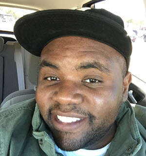

About Me
Hi! I'm Andre' Morrall, and I'm a student at SMU's Coding Camp. Right now, I've spent the past five years in IT providing Desktop Support, and I'm excited about becoming a web developer
Nearly 6 years ago, I worked in a call center for a cable company, and we had no formal workflow for troubleshooting the prodcuts. One day, I "developed" a how-to internal webpage for my team by hyperlinking a couple of Word documents, converting them into HTML format, and saving them on a network share. I'd have to say that was one of the most satisfying accomplishments as an IT professional, and it's the reason why I'm ready to start this next phase of my career in IT as a web developer.
I'm from South Carolina, and I've lived in Dallas for three years. It's been an amazing experience! I love the food, especially street tacos. When I'm not exploring Dallas and its local eateries, I'm working out, reading or coding.